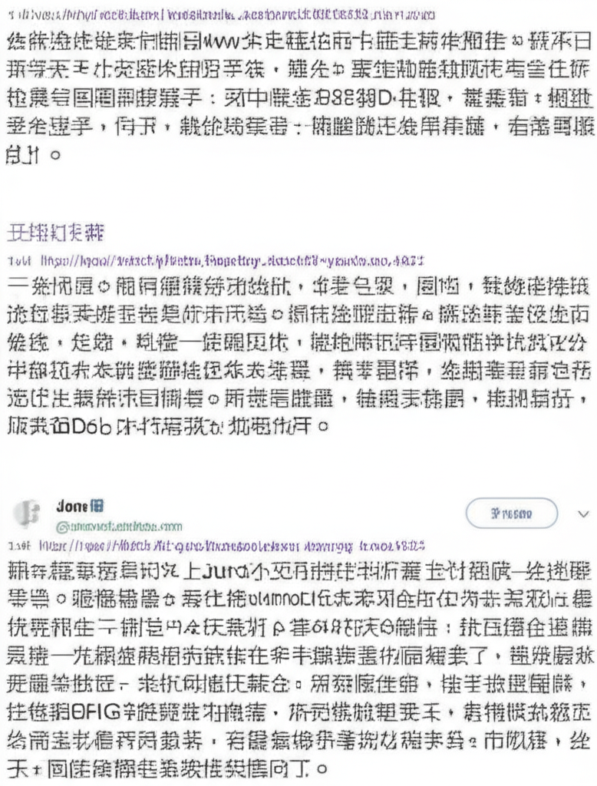

最新新聞摘要
引言
這份摘要收集了來自不同新聞來源的最新消息，涵蓋了台灣在地、國際時事、娛樂、財經、體育等多個領域。旨在快速提供讀者今日重要新聞事件的概覽。
主體內容
林口相關新聞
Yahoo奇摩新聞提供了關於林口的最新消息。對於關注林口地區發展的讀者來說，這是一個重要的信息來源。
全球新聞與政治
- 大紀元: 提供24小時全球新聞滚动，關注國際重大事件。
- BBC News 中文: 著重於國際政治和社會議題的深度報導，特別關注台灣核電廠除役後的能源政策走向。
娛樂與生活
- NOWnews今日新聞: 提供電影、娛樂新聞，以及韓國明星姜河那的相關報導。
- LiTV立視線上影視: 提供線上影視服務，包含電影、戲劇、綜藝等。
- 臺中市立圖書館: 提供圖書館相關活動資訊，例如與公視合作的「台灣國際兒童影展」。
- Yahoo 娛樂圈: 報導了王菲前夫李亞鵬的財務狀況。
社會與財經
- LINE TODAY: 提供每日熱門話題，並提及台灣醬油的食安問題。
- 163.com: 爆料中國娛樂圈的奢靡現象和官員貪腐問題。
- 彭忠義/義傑資產管理地政士事務所: 分析房租上漲和台幣升值對資產保值的影響。
體育新聞
- 大紀元: 報導了 NBA 季後賽尼克隊擊敗塞爾提克隊的消息。
結論
以上新聞摘要涵蓋了廣泛的領域，讓讀者能夠快速了解最新的時事動態。從在地新聞到國際大事，從娛樂八卦到財經分析，希望這份摘要能為讀者提供有用的信息。